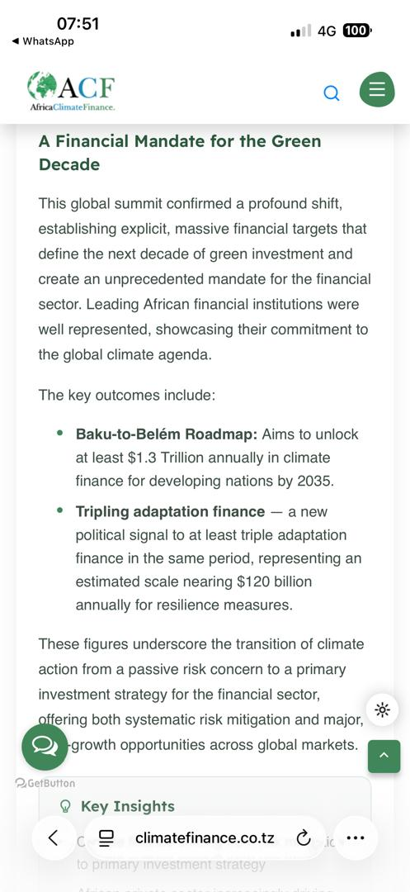

Carbon Market
Beyond the Harvest: Unlocking Carbon Income for Smallholder Farmers

{kind=link}



At Africa Climate Finance, we are turning environmental stewardship into tangible economic empowerment. Following our recent strategic partnership and comprehensive training programs, our staff and community champions are actively on the ground across various villages in the Mbeya region of Tanzania—driving grassroots mobilization, deploying targeted financial education, and registering smallholder farmers into certified carbon initiatives.
As we operationalize frameworks aligned with the UNFCCC and global climate goals, we are bridging the gap between local agricultural communities and international carbon markets. By converting rigorous MRV (Measurement, Reporting, and Verification) protocols into accessible community actions, we ensure that rural smallholders are not just observers of global climate finance, but direct beneficiaries of the green economy. Furthermore, this direct carbon income provides the financial gateway necessary for villagers to open formal bank accounts, integrating unbanked households into the regulated financial system.
How It Works
Through climate-smart agroforestry, farmers integrate tree planting with traditional crop cultivation. As these trees mature alongside staple Mbeya crops like avocados, tea, coffee, and bananas, they capture carbon dioxide, generating high-integrity, verified carbon credits.
- One Carbon Credit = One metric ton of carbon dioxide removed or avoided.
- The Result: Farmers continue growing high-value local crops while harvesting a brand-new, lucrative crop: Carbon. Proceeds from credit sales flow directly back to households, creating a sustainable secondary revenue stream.
Impact & Scale
-
Community-Led Action
Empowered local trainers are spearheading on-the-ground farmer registration, ensuring rapid scale and deep rural inclusion across Mbeya's rich agricultural ecosystems.
-
Financial Inclusion & Bankability
By integrating rural producers into formal green value chains—spanning world-class avocado orchards, tea estates, and coffee plots—we unlock pathways to mobile payments, formal bank account ownership, tailored agribusiness financing, and long-term asset building.
-
True Sustainability
Environmental restoration directly drives poverty alleviation, proving that robust climate action and inclusive economic growth go hand in hand.